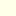
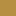

<!doctype html>
<html lang="en">
    <head>
        <meta charset="utf-8">
        <meta http-equiv="X-UA-Compatible" content="IE=edge">
        <meta name="viewport" content="initial-scale=1,user-scalable=no,maximum-scale=1,width=device-width">
        <meta name="mobile-web-app-capable" content="yes">
        <meta name="apple-mobile-web-app-capable" content="yes">
        <link rel="stylesheet" href="css/leaflet.css">
        <link rel="stylesheet" href="css/L.Control.Layers.Tree.css">
        <link rel="stylesheet" href="css/L.Control.Locate.min.css">
        <link rel="stylesheet" href="css/qgis2web.css">
        <link rel="stylesheet" href="css/fontawesome-all.min.css">
        <link rel="stylesheet" href="css/leaflet-control-geocoder.Geocoder.css">
        <link rel="stylesheet" href="css/leaflet-measure.css">
        <style>
        html, body, #map {
            width: 100%;
            height: 100%;
            padding: 0;
            margin: 0;
        }
        </style>
        <title>UP GEO-POV WEBMAP v0.1.1</title>
    </head>
    <body>
        <div id="map">
        </div>
        <script src="js/qgis2web_expressions.js"></script>
        <script src="js/leaflet.js"></script>
        <script src="js/L.Control.Layers.Tree.min.js"></script>
        <script src="js/L.Control.Locate.min.js"></script>
        <script src="js/leaflet.rotatedMarker.js"></script>
        <script src="js/leaflet.pattern.js"></script>
        <script src="js/leaflet-hash.js"></script>
        <script src="js/Autolinker.min.js"></script>
        <script src="js/rbush.min.js"></script>
        <script src="js/labelgun.min.js"></script>
        <script src="js/labels.js"></script>
        <script src="js/leaflet-control-geocoder.Geocoder.js"></script>
        <script src="js/leaflet-measure.js"></script>
        <script src="data/footways_4.js"></script>
        <script src="data/RoadsOutline_5.js"></script>
        <script src="data/Roads_6.js"></script>
        <script src="data/academic_7.js"></script>
        <script src="data/UPExtents_8.js"></script>
        <script>
        var highlightLayer;
        function highlightFeature(e) {
            highlightLayer = e.target;

            if (e.target.feature.geometry.type === 'LineString' || e.target.feature.geometry.type === 'MultiLineString') {
              highlightLayer.setStyle({
                color: '#ffff00',
              });
            } else {
              highlightLayer.setStyle({
                fillColor: '#ffff00',
                fillOpacity: 1
              });
            }
        }
        var map = L.map('map', {
            zoomControl:false, maxZoom:28, minZoom:1
        }).fitBounds([[14.645670503123537,121.05175740933133],[14.662316135012302,121.07935635424352]]);
        var hash = new L.Hash(map);
        map.attributionControl.setPrefix('<a href="https://github.com/tomchadwin/qgis2web" target="_blank">qgis2web</a> &middot; <a href="https://leafletjs.com" title="A JS library for interactive maps">Leaflet</a> &middot; <a href="https://qgis.org">QGIS</a>');
        var autolinker = new Autolinker({truncate: {length: 30, location: 'smart'}});
        // remove popup's row if "visible-with-data"
        function removeEmptyRowsFromPopupContent(content, feature) {
         var tempDiv = document.createElement('div');
         tempDiv.innerHTML = content;
         var rows = tempDiv.querySelectorAll('tr');
         for (var i = 0; i < rows.length; i++) {
             var td = rows[i].querySelector('td.visible-with-data');
             var key = td ? td.id : '';
             if (td && td.classList.contains('visible-with-data') && feature.properties[key] == null) {
                 rows[i].parentNode.removeChild(rows[i]);
             }
         }
         return tempDiv.innerHTML;
        }
        // add class to format popup if it contains media
		function addClassToPopupIfMedia(content, popup) {
			var tempDiv = document.createElement('div');
			tempDiv.innerHTML = content;
			if (tempDiv.querySelector('td img')) {
				popup._contentNode.classList.add('media');
					// Delay to force the redraw
					setTimeout(function() {
						popup.update();
					}, 10);
			} else {
				popup._contentNode.classList.remove('media');
			}
		}
        var title = new L.Control({'position':'topleft'});
        title.onAdd = function (map) {
            this._div = L.DomUtil.create('div', 'info');
            this.update();
            return this._div;
        };
        title.update = function () {
            this._div.innerHTML = '<h2>UP GEO-POV WEBMAP v0.1.1</h2>';
        };
        title.addTo(map);
        var abstract = new L.Control({'position':'bottomleft'});
        abstract.onAdd = function (map) {
            this._div = L.DomUtil.create('div',
            'leaflet-control abstract');
            this._div.id = 'abstract'

                abstract.show();
                return this._div;
            };
            abstract.show = function () {
                this._div.classList.remove("abstract");
                this._div.classList.add("abstractUncollapsed");
                this._div.innerHTML = 'A UP Diliman Campus Resources Viewer web application for iskolars ng bayan by UP GEOP<br /><br />';
        };
        abstract.addTo(map);
        var zoomControl = L.control.zoom({
            position: 'topleft'
        }).addTo(map);
        L.control.locate({locateOptions: {maxZoom: 19}}).addTo(map);
        var measureControl = new L.Control.Measure({
            position: 'topleft',
            primaryLengthUnit: 'meters',
            secondaryLengthUnit: 'kilometers',
            primaryAreaUnit: 'sqmeters',
            secondaryAreaUnit: 'hectares'
        });
        measureControl.addTo(map);
        document.getElementsByClassName('leaflet-control-measure-toggle')[0].innerHTML = '';
        document.getElementsByClassName('leaflet-control-measure-toggle')[0].className += ' fas fa-ruler';
        var bounds_group = new L.featureGroup([]);
        function setBounds() {
        }
        map.createPane('pane_OSMStandard_0');
        map.getPane('pane_OSMStandard_0').style.zIndex = 400;
        var layer_OSMStandard_0 = L.tileLayer('http://tile.openstreetmap.org/{z}/{x}/{y}.png', {
            pane: 'pane_OSMStandard_0',
            opacity: 1.0,
            attribution: '<a href="https://www.openstreetmap.org/copyright">© OpenStreetMap contributors, CC-BY-SA</a>',
            minZoom: 1,
            maxZoom: 28,
            minNativeZoom: 0,
            maxNativeZoom: 19
        });
        layer_OSMStandard_0;
        map.createPane('pane_GoogleHybrid_1');
        map.getPane('pane_GoogleHybrid_1').style.zIndex = 401;
        var layer_GoogleHybrid_1 = L.tileLayer('https://mt1.google.com/vt/lyrs=y&x={x}&y={y}&z={z}', {
            pane: 'pane_GoogleHybrid_1',
            opacity: 1.0,
            attribution: '<a href="https://www.google.at/permissions/geoguidelines/attr-guide.html">Map data ©2015 Google</a>',
            minZoom: 1,
            maxZoom: 28,
            minNativeZoom: 0,
            maxNativeZoom: 20
        });
        layer_GoogleHybrid_1;
        map.createPane('pane_DarkMatternolabels_2');
        map.getPane('pane_DarkMatternolabels_2').style.zIndex = 402;
        var layer_DarkMatternolabels_2 = L.tileLayer('https://a.basemaps.cartocdn.com/dark_nolabels/{z}/{x}/{y}.png', {
            pane: 'pane_DarkMatternolabels_2',
            opacity: 1.0,
            attribution: '<a href="https://cartodb.com/basemaps/">Map tiles by CartoDB, under CC BY 3.0. Data by OpenStreetMap, under ODbL.</a>',
            minZoom: 1,
            maxZoom: 28,
            minNativeZoom: 0,
            maxNativeZoom: 20
        });
        layer_DarkMatternolabels_2;
        map.createPane('pane_Positronretina_3');
        map.getPane('pane_Positronretina_3').style.zIndex = 403;
        var layer_Positronretina_3 = L.tileLayer('https://a.basemaps.cartocdn.com/light_all/{z}/{x}/{y}@2x.png', {
            pane: 'pane_Positronretina_3',
            opacity: 1.0,
            attribution: '<a href="https://cartodb.com/basemaps/">Map tiles by CartoDB, under CC BY 3.0. Data by OpenStreetMap, under ODbL.</a>',
            minZoom: 1,
            maxZoom: 28,
            minNativeZoom: 0,
            maxNativeZoom: 20
        });
        layer_Positronretina_3;
        map.addLayer(layer_Positronretina_3);
        function pop_footways_4(feature, layer) {
            layer.on({
                mouseout: function(e) {
                    for (var i in e.target._eventParents) {
                        if (typeof e.target._eventParents[i].resetStyle === 'function') {
                            e.target._eventParents[i].resetStyle(e.target);
                        }
                    }
                },
                mouseover: highlightFeature,
            });
            var popupContent = '<table>\
                    <tr>\
                        <td colspan="2">' + (feature.properties['fclass'] !== null ? autolinker.link(feature.properties['fclass'].toLocaleString()) : '') + '</td>\
                    </tr>\
                    <tr>\
                        <td colspan="2">' + (feature.properties['name'] !== null ? autolinker.link(feature.properties['name'].toLocaleString()) : '') + '</td>\
                    </tr>\
                    <tr>\
                        <td colspan="2">' + (feature.properties['oneway'] !== null ? autolinker.link(feature.properties['oneway'].toLocaleString()) : '') + '</td>\
                    </tr>\
                </table>';
            var content = removeEmptyRowsFromPopupContent(popupContent, feature);
			layer.on('popupopen', function(e) {
				addClassToPopupIfMedia(content, e.popup);
			});
			layer.bindPopup(content, { maxHeight: 400 });
        }

        function style_footways_4_0() {
            return {
                pane: 'pane_footways_4',
                stroke: false, 
                fill: true,
                fillOpacity: 1,
                fillColor: 'rgba(182,143,64,1.0)',
                interactive: false,
            }
        }
        map.createPane('pane_footways_4');
        map.getPane('pane_footways_4').style.zIndex = 404;
        map.getPane('pane_footways_4').style['mix-blend-mode'] = 'normal';
        var layer_footways_4 = new L.geoJson(json_footways_4, {
            attribution: '',
            interactive: false,
            dataVar: 'json_footways_4',
            layerName: 'layer_footways_4',
            pane: 'pane_footways_4',
            onEachFeature: pop_footways_4,
            style: style_footways_4_0,
        });
        bounds_group.addLayer(layer_footways_4);
        map.addLayer(layer_footways_4);
        function pop_RoadsOutline_5(feature, layer) {
            layer.on({
                mouseout: function(e) {
                    for (var i in e.target._eventParents) {
                        if (typeof e.target._eventParents[i].resetStyle === 'function') {
                            e.target._eventParents[i].resetStyle(e.target);
                        }
                    }
                },
                mouseover: highlightFeature,
            });
            var popupContent = '<table>\
                    <tr>\
                        <td colspan="2">' + (feature.properties['fclass'] !== null ? autolinker.link(feature.properties['fclass'].toLocaleString()) : '') + '</td>\
                    </tr>\
                    <tr>\
                        <td colspan="2">' + (feature.properties['name'] !== null ? autolinker.link(feature.properties['name'].toLocaleString()) : '') + '</td>\
                    </tr>\
                    <tr>\
                        <td colspan="2">' + (feature.properties['oneway'] !== null ? autolinker.link(feature.properties['oneway'].toLocaleString()) : '') + '</td>\
                    </tr>\
                </table>';
            var content = removeEmptyRowsFromPopupContent(popupContent, feature);
			layer.on('popupopen', function(e) {
				addClassToPopupIfMedia(content, e.popup);
			});
			layer.bindPopup(content, { maxHeight: 400 });
        }

        function style_RoadsOutline_5_0() {
            return {
                pane: 'pane_RoadsOutline_5',
                stroke: false, 
                fill: true,
                fillOpacity: 1,
                fillColor: 'rgba(51,160,44,1.0)',
                interactive: false,
            }
        }
        map.createPane('pane_RoadsOutline_5');
        map.getPane('pane_RoadsOutline_5').style.zIndex = 405;
        map.getPane('pane_RoadsOutline_5').style['mix-blend-mode'] = 'normal';
        var layer_RoadsOutline_5 = new L.geoJson(json_RoadsOutline_5, {
            attribution: '',
            interactive: false,
            dataVar: 'json_RoadsOutline_5',
            layerName: 'layer_RoadsOutline_5',
            pane: 'pane_RoadsOutline_5',
            onEachFeature: pop_RoadsOutline_5,
            style: style_RoadsOutline_5_0,
        });
        bounds_group.addLayer(layer_RoadsOutline_5);
        map.addLayer(layer_RoadsOutline_5);
        function pop_Roads_6(feature, layer) {
            layer.on({
                mouseout: function(e) {
                    for (var i in e.target._eventParents) {
                        if (typeof e.target._eventParents[i].resetStyle === 'function') {
                            e.target._eventParents[i].resetStyle(e.target);
                        }
                    }
                },
                mouseover: highlightFeature,
            });
            var popupContent = '<table>\
                    <tr>\
                        <td colspan="2">' + (feature.properties['fclass'] !== null ? autolinker.link(feature.properties['fclass'].toLocaleString()) : '') + '</td>\
                    </tr>\
                    <tr>\
                        <td colspan="2">' + (feature.properties['name'] !== null ? autolinker.link(feature.properties['name'].toLocaleString()) : '') + '</td>\
                    </tr>\
                    <tr>\
                        <td colspan="2">' + (feature.properties['oneway'] !== null ? autolinker.link(feature.properties['oneway'].toLocaleString()) : '') + '</td>\
                    </tr>\
                </table>';
            var content = removeEmptyRowsFromPopupContent(popupContent, feature);
			layer.on('popupopen', function(e) {
				addClassToPopupIfMedia(content, e.popup);
			});
			layer.bindPopup(content, { maxHeight: 400 });
        }

        function style_Roads_6_0() {
            return {
                pane: 'pane_Roads_6',
                stroke: false, 
                fill: true,
                fillOpacity: 1,
                fillColor: 'rgba(255,255,233,1.0)',
                interactive: false,
            }
        }
        map.createPane('pane_Roads_6');
        map.getPane('pane_Roads_6').style.zIndex = 406;
        map.getPane('pane_Roads_6').style['mix-blend-mode'] = 'normal';
        var layer_Roads_6 = new L.geoJson(json_Roads_6, {
            attribution: '',
            interactive: false,
            dataVar: 'json_Roads_6',
            layerName: 'layer_Roads_6',
            pane: 'pane_Roads_6',
            onEachFeature: pop_Roads_6,
            style: style_Roads_6_0,
        });
        bounds_group.addLayer(layer_Roads_6);
        map.addLayer(layer_Roads_6);
        function pop_academic_7(feature, layer) {
            layer.on({
                mouseout: function(e) {
                    for (var i in e.target._eventParents) {
                        if (typeof e.target._eventParents[i].resetStyle === 'function') {
                            e.target._eventParents[i].resetStyle(e.target);
                        }
                    }
                },
                mouseover: highlightFeature,
            });
            var popupContent = '<table>\
                    <tr>\
                        <td colspan="2"><strong>name</strong><br />' + (feature.properties['name'] !== null ? autolinker.link(feature.properties['name'].toLocaleString()) : '') + '</td>\
                    </tr>\
                    <tr>\
                        <th scope="row">altname</th>\
                        <td class="visible-with-data" id="altname">' + (feature.properties['altname'] !== null ? autolinker.link(feature.properties['altname'].toLocaleString()) : '') + '</td>\
                    </tr>\
                    <tr>\
                        <td colspan="2"><strong>Media</strong><br />' + (feature.properties['Media'] !== null ? autolinker.link(feature.properties['Media'].toLocaleString()) : '') + '</td>\
                    </tr>\
                </table>';
            var content = removeEmptyRowsFromPopupContent(popupContent, feature);
			layer.on('popupopen', function(e) {
				addClassToPopupIfMedia(content, e.popup);
			});
			layer.bindPopup(content, { maxHeight: 400 });
        }

        function style_academic_7_0() {
            return {
                pane: 'pane_academic_7',
                stroke: false, 
                fill: true,
                fillOpacity: 1,
                fillColor: 'rgba(79,205,255,1.0)',
                interactive: true,
            }
        }
        map.createPane('pane_academic_7');
        map.getPane('pane_academic_7').style.zIndex = 407;
        map.getPane('pane_academic_7').style['mix-blend-mode'] = 'normal';
        var layer_academic_7 = new L.geoJson(json_academic_7, {
            attribution: '',
            interactive: true,
            dataVar: 'json_academic_7',
            layerName: 'layer_academic_7',
            pane: 'pane_academic_7',
            onEachFeature: pop_academic_7,
            style: style_academic_7_0,
        });
        bounds_group.addLayer(layer_academic_7);
        map.addLayer(layer_academic_7);
        function pop_UPExtents_8(feature, layer) {
            layer.on({
                mouseout: function(e) {
                    for (var i in e.target._eventParents) {
                        if (typeof e.target._eventParents[i].resetStyle === 'function') {
                            e.target._eventParents[i].resetStyle(e.target);
                        }
                    }
                },
                mouseover: highlightFeature,
            });
            var popupContent = '<table>\
                    <tr>\
                        <td colspan="2">' + (feature.properties['id'] !== null ? autolinker.link(feature.properties['id'].toLocaleString()) : '') + '</td>\
                    </tr>\
                    <tr>\
                        <th scope="row">area</th>\
                        <td>' + (feature.properties['area'] !== null ? autolinker.link(feature.properties['area'].toLocaleString()) : '') + '</td>\
                    </tr>\
                    <tr>\
                        <td colspan="2">' + (feature.properties['perimeter'] !== null ? autolinker.link(feature.properties['perimeter'].toLocaleString()) : '') + '</td>\
                    </tr>\
                </table>';
            var content = removeEmptyRowsFromPopupContent(popupContent, feature);
			layer.on('popupopen', function(e) {
				addClassToPopupIfMedia(content, e.popup);
			});
			layer.bindPopup(content, { maxHeight: 400 });
        }

        function style_UPExtents_8_0() {
            return {
                pane: 'pane_UPExtents_8',
                opacity: 1,
                color: 'rgba(182,35,9,1.0)',
                dashArray: '',
                lineCap: 'butt',
                lineJoin: 'miter',
                weight: 3.0, 
                fillOpacity: 0,
                interactive: false,
            }
        }
        map.createPane('pane_UPExtents_8');
        map.getPane('pane_UPExtents_8').style.zIndex = 408;
        map.getPane('pane_UPExtents_8').style['mix-blend-mode'] = 'normal';
        var layer_UPExtents_8 = new L.geoJson(json_UPExtents_8, {
            attribution: '',
            interactive: false,
            dataVar: 'json_UPExtents_8',
            layerName: 'layer_UPExtents_8',
            pane: 'pane_UPExtents_8',
            onEachFeature: pop_UPExtents_8,
            style: style_UPExtents_8_0,
        });
        bounds_group.addLayer(layer_UPExtents_8);
        map.addLayer(layer_UPExtents_8);
        var osmGeocoder = new L.Control.Geocoder({
            collapsed: true,
            position: 'topleft',
            text: 'Search',
            title: 'Testing'
        }).addTo(map);
        document.getElementsByClassName('leaflet-control-geocoder-icon')[0]
        .className += ' fa fa-search';
        document.getElementsByClassName('leaflet-control-geocoder-icon')[0]
        .title += 'Search for a place';
        var baseMaps = {};
        var overlaysTree = [
            {label: ' UP Extents', layer: layer_UPExtents_8},
            {label: ' academic', layer: layer_academic_7},
        {label: '<b>Paths</b>', selectAllCheckbox: true, children: [
            {label: ' Roads', layer: layer_Roads_6},
            {label: ' Roads Outline', layer: layer_RoadsOutline_5},
            {label: ' footways', layer: layer_footways_4},]},
        {label: '<b>Basemaps</b>', selectAllCheckbox: true, children: [
            {label: "Positron (retina)", layer: layer_Positronretina_3},
            {label: "Dark Matter [no labels]", layer: layer_DarkMatternolabels_2},
            {label: "Google Hybrid", layer: layer_GoogleHybrid_1},
            {label: "OSM Standard", layer: layer_OSMStandard_0},]},]
        var lay = L.control.layers.tree(null, overlaysTree,{
            //namedToggle: true,
            //selectorBack: false,
            //closedSymbol: '&#8862; &#x1f5c0;',
            //openedSymbol: '&#8863; &#x1f5c1;',
            //collapseAll: 'Collapse all',
            //expandAll: 'Expand all',
            collapsed: true,
        });
        lay.addTo(map);
        setBounds();
        resetLabels([layer_Roads_6]);
        map.on("zoomend", function(){
            resetLabels([layer_Roads_6]);
        });
        map.on("layeradd", function(){
            resetLabels([layer_Roads_6]);
        });
        map.on("layerremove", function(){
            resetLabels([layer_Roads_6]);
        });
        </script>
    </body>
</html>
